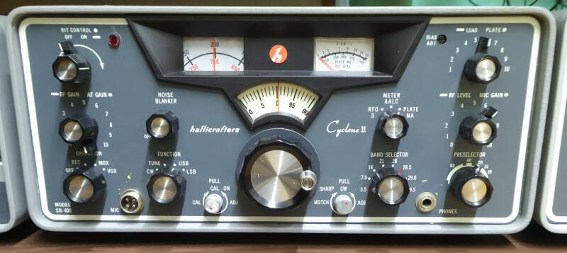
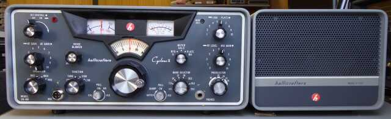
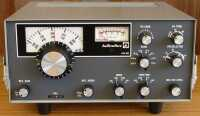
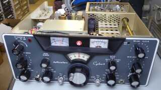
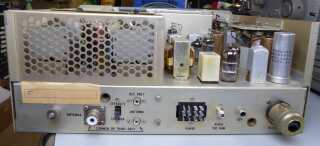
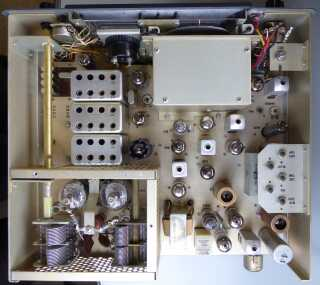
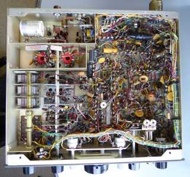

 |
１９６５年から６９年にかけて販売されたとあります
入手したもののは、１９７０年のスタンプが押してあります
真空管２０球で構成された、ＨＦトランシーバです
どこの社を問わず、管球式最後のマシン、と言って良いかもしれません（真空管の時代は、６０年代で終焉を迎えます）
ｈａｌｌｉｃｒａｆｔｅｒｓ社が手がけたアマチュア無線機としては、長い歴史を持つＳＲシリーズの最終に近い製品というように思います
1stＩＦ：６．０～６．５ＭＨｚ ２ｎｄＩＦ：１６５０ＫＨｚ（６ポール・クリスタル・フィルタ搭載） この時期ハリクラフターズ標準？のダブル・スーパー・ヘテロダイン（受信については、高１・中３）構成です
増幅型のＡＧＣ（ＲＦとＩＦ１段を対象）、ＡＬＣ（ＩＦ１段を対象）を採用と、こちらもハリクラフターズの十八番です |

本体サイズ（単位ｍｍ） 幅３８１ 高さ１６５ 奥行き３３０ 突起部含まず |
この後、ＳＲ-４００Ａ ＣｙｃｌｏｎｅＩＩＩ が登場します（１９６９年 僅か１年の販売で終売？）
ファイナル・チューブの変更（６ＫＤ６×２）で、入力５５０ＷＰＥＰとなっています（ロゴマークの色が、赤から青へ？）
ＳＲシリーズは、ここで終わったようで（ＳＲ-２０００は、７２年まで販売を継続したようです）、ｈａｌｌｉｃｒａｆｔｅｒｓとして最後のアマチュア無線用トランシーバーとして発売されたのは、ＦＰＭ-３００だったと思います

ＦＰＭ-３００ |
ＦＴ－１０１風（意識したと思われます／ＦＴ-１０１は、１９７０年の発売）に、ＡＣ／ＤＣ電源を内蔵した、コンパクト・モデル
実際は、ＩＦ：９ＭＨｚ シングル・コンバージョン・タイプ（ＦＴ-２０１ライク）です
ファイナル６ＫＤ６シングル（１００Ｗ出力！２５０ＷＰＥＰと）、ドライバ１２ＢＹ７Ａ その他は、半導体を採用というもので、１９７２年から７４年くらいの間で販売されたようです
＄５９５と、ままリーズナブルな金額が付いていました
余談ながら、ＦＴ-１０１Ｅ ７４年頃、＄６４９で広告されているのを見たような気がします |
この後、世界からｈａｌｌｉｃｒａｆｔｅｒｓという社は、消え去ってしまいました
１９３２年の創業、第二次大戦前／中には、ＨＴ-４／ＢＣ-６１０という送信機で高名を馳せたこの社、戦後は、ラジオ・テープレコーダー・テレビと、民生品を中心に社員数２５００名を超えるまで大きくビジネスを展開したようですが、１９７０年代になると、民生品を含む電気製品全てにわたって、日本の製品がＵＳに押し寄せることになり、その結果、消え去ったということになります
余談ながら、ＳＲ-４００の取説には、既にＮｏｒｔｈｒｏｐ社（航空機メーカー）の子会社であることが記されています |
 |
|
 |
ケースを取り外した状態で、フロント側からの撮影です
独特の「顔」・・・アルミ・ダイキャストで作られたエスカッションが使われています
お金をかけています
シャーシからケースに至るまで、全てアルミ製です
ＵＳの方々は、左右対称デザインがお好きなようです
ＭＩＣジャックですが、この際一般的な４Ｐのもの（ＭＩＣ-４Ｐ）に交換しました（オリジナルは、アンフェノール ８０-ＭＣ２Ｍ／ＨｅａｔｈＫｉｔ等で見られる２Ｐのもの） |
|
 |
リア側です
外部電源 ＰＳ-５００Ａ-ＡＣとの接続は、お決まりの１２Ｐ角形ジョンソン・コネクタです
アクセサリ・ソケット（外部ＶＦＯ接続）は、ＹＡＥＳＵが使っている１１Ｐコネクタと同じものです
シャーシには、１９７０年５月２１日のスタンプが押してあります |
|
 |
ケースを取り外した状態で上側を撮したもの
上部長四角なＢＯＸは、ＶＦＯユニット
真空管は、右横に寝かせてあります
きっと、高さを抑えるためでしょう
クリスタル・フィルタは、右サイドにある調整ボリューム／サブ・シャーシの下に見えます
ファイナルは、６ＨＦ５が２本
プレートＶＣですが、タイト製ではなく、受信機用風なもののローター／ステーター間隔を広くとったものが採用されています
アルミ・シャーシの採用で、非常に綺麗な状態を保っています |
|
 |
ボトムの写真です
きちんとワイヤー・ハーネスが使用されています
ぱっと見、Ｃｏｌｌｉｎｓ風の配線・・・ですね
いろんな意味で、Ｃｏｌｌｉｎｓを意識していることを見て感じます
余談ながら、ファイナル・タンクコイルは、見るからに貧弱ですし、コイルまでプレートから長い距離を引っ張っていますし、周囲も狭く壁に囲まれています
ＴＶ水平出力管に、この配線って、どう？？？
また、気になるので（真空管２本のピン並列接続／ピン４本に対しパスコン１個の使用）、ファイナル・ソケット回りのパスコンを追加しました
|
アマチュア・バンド専用とはいえ、ノイズ・ブランカ、ＲＩＴ（クラリファイア）、ノッチ・フィルタ（ラティス型 ＳＳＢ／ＣＷいずれにも対応）、簡単なＣＷフィルタ（水晶１片のラティス型）など、ＫＷＭ-２には無い機能を、標準で搭載しています
送信パワーも、ＳＳＢ ４００ＷＰＥＰ入力と、ハイパワーです
これらからして、あのＫＷＭ-２に向かって対抗心溢れる製品ではないかと考えられます
１９６９年の７３_ｍａｇａｚｉｎｅには、電源別の本体価格で、ＳＲ-４００は、＄８００ ＫＷＭ-２は、＄１，１５０で広告されていました（１＄＝￥３６０の時代）
余談ながら、Ｄｒａｋｅ ＴＲ-４は、＄６００でした |
|
メカのクリーニングを行った後、電源関係に問題が生じていないかどうかチェックをしたうえで、通電してみました
いきなり発振しています（受信動作はしている！）
発振元は、どうやら送信ファイナル・・・
プレート同調を思い切り離調させると止まります
この状態で、ＳＳＧ信号を受けるときちんと感度は取れています
そのまま、ＩＦの調整をしました
見るからにファイナル・チューブがくたびれています
試しに送信してみると、パワーはいくらか出ています（２０Ｗ位）
２本の動作もバラバラ（片方だけプレートが赤くなります）、アイドリング状態でＩＰが大きく変化します
浅めのバイアス電圧になっていますし、中和も思いっきりずれています
これらが影響して発振をしていたと思われます（競合なんとか！）
６ＨＦ５・・・ＳＷＡＮ-５００の予備を意識して入手していた新品（ＮＯＳ）と交換しました
ＰＳ背面と本体フロント面、その両方に、バイアス調整ボリュームが用意されてます
と言うことは、結構な頻度で調整が必要か？？
指定のアイドリング電流にするには、元の状態よりかなりバイアス電圧を深く調整する必要がありました
真空管の交換により、７／１４ＭＨｚ帯においては、１５０Ｗ程度の出力が得られるようになりました
変にアイドリング電流の表示が変化します
ドライバ間のカップリング・コンデンサ？ ファイナル管のカソード抵抗の劣化？ メーター・アンプの不具合？ 等々考えられますが、色々チェックをしたところ、どこかの時点での改造・・・メーター・アンプのバイアス回路に後付けされた半固定ボリュームに原因がありました（要は、見た目の問題だけだった）
必要を感じませんので取り去りました！ |
|
|
少し仕事を残したような気もしますが、最後にスペック・チェックです
送信 ３．５ＭＨｚ帯 １６０Ｗ程度
７ＭＨｚ～２１ＭＨｚ帯 １８０Ｗ程度
プレートＶＣに、減速機構はないのでシビア！
Ｅｐ７５０Ｖ × ０．４Ａ前後ならこんなものかな？
２８ＭＨｚ帯 ５０～７０Ｗ程度
先に記したように、ファイナル・タンクコイル回りは、はっきり言って貧弱です
３．５／２８ＭＨｚ帯のパワーが少ない原因になっているかも知れません
パワー不足について
決定的な問題と言うより経年変化／劣化っぽい（分かりづらい状況）
なんとなくですが、全体的にゲイン不足に感じられますが、ここで追求中止です
後述しますが、キャリア・サプレッションもイマイチですが、打ち止めにします
（パワー優先よりキャリア・サプレッション優先で、キャリアレベルを下げました）
スペックにおいては、ＰＥＰ２００Ｗ出力で
２１ＭＨｚ／２８ＭＨｚ帯では、出力は若干下がるとの記載あります
受信 スペックにおいては、１μＶ入力で Ｓ／Ｎ２０ｄｂ以上とあります
１４ＭＨｚ帯においては、Ｓ／Ｎ ２６ｄｂくらいあります
１４ＭＨｚ帯 ０．２ μＶ入力で Ｓ／Ｎ１０ｄｂ＋ と、かなりの感度です
ＳＲ-２０００ほどの筐体内の温度変化がないのか、今の季節で裸でテストしているせいなのか、
ＱＲＨは、意外と感じません
非常に静かに受信することが出来ます（真空管式の良いところでしょうか）
４０μＶでＳ９に調整したＳメータの振れも、良い感じ・・・私の感性に合っている！です
当時の音ですが、長時間聞いて疲れるような音色ではありません
しばらくこのまま使ってみようかという気にもなります
こと、受信に関しては、何も問題はありません
細かい点・・・そこはＵＳスタイルで、誰も問題にしないのでしょうが、
ダイヤル周波数表示校正のための「ＣＡＬ」ボリュームと、ＲＩＴ（クラリファイア）のボリュームが同じ
ひとつの系統となっています
何が起きるかというとＲＩＴ（クラリファイア）の零点が、「ＣＡＬ」ボリュームの位置で、僅かながら変化します
自身の送信周波数の上下±２ＫＨｚが、メインダイヤルを動かさずに可変（受信）出来れば
いい・・・と言うことで、センターが常に一定である必要はないのでしょう |
■何となく、送信でゲイン不足！？
３．５ＭＨｚ帯において、試しにドライブ段間コイルのＱダンプ抵抗を外すと、ばっちり１８０Ｗ近く出力が得られましたので、そのままＯＫとしました
真空管（ファイナル・ドライバ以外）の劣化？ 部品の劣化？ ２８ＭＨｚ帯においてはパワーが出ません
キャリア・レベルをぎりぎり持ち上げれば１００Ｗ強は出ますが・・・ |
修理の痕跡などありますので、そのあたりもきちんと対応していきます（部品の劣化が進んでいるところがあるし、意味不明な改造も・・・）
真空管の使い方については、ＫＷＭ－２ほどの無理な使い方はしてありません（ＳＧに高い電圧をかけていません）
真空管の劣化については、あまり意識しなくても良いのかも知れません
■ＰＳ-５００Ａ-ＡＣ 外付け電源装置
どうでも良いことかも知れませんが、このＰＳ底に取り付いている足がきゃしゃ・・・・ゴム製では、自身の重さに押しつぶされてしまいます（現実、筐体の水平が保てていませんでした）
同じ高さのものを探して、樹脂製の足に交換しました
ＰＳ内部ですが、電解コンデンサは全て国産のものに交換、あるいは並列に追加してありました
劣化の始まりは、電解コンデンサと言うことの理解のある方が前オーナーのようです
キャリア・サプレッションの悪さと、マイク・アンプの発するノイズが、少し気になります
ダイオード４本のリング変調方式（現状は２本方式）に変更しようかなぁと思いながら、思っただけで止めました
マイク入力配線のワンポイント・アースなど気配りしてみましたが、大きな改善には結びつきませんでした
|
|
実は、兄貴分のＳＲ-２０００ Hurricane を有しています
こちらは１９６５年の発売から１９７２年まで販売が続いたようです
入手した時点で、電源トランス（２００Ｖ／２３０Ｖセンタータップ付き）を特注してまで、一度はＯＮ-ＡＩＲできるところまで整備を行っていたのですが、そのまま放置して２０年近くになります
ＡＧＣ（復調音）、あるいはＶＦＯのドリフトなど、ちょっと気になったところに手を入れかかったところでの放置、です（ホコリを被っています）
今であるなら、ＤＢＭ検波に、Ｘ-Ｌｏｃｋの組み込みで終わってしまいそうなお話です
この再生の前に、ついこのＳＲ-４００を手に入れてしまいました
ＳＲ-２０００においては、外部電源がとても重たいし、高圧２８００Ｖは、怖い・・・こちらは、クラス相応の７５０Ｖです
そうは言っても、折角手元にあるので、どこかでは手をつけないと、とは常々思っています |